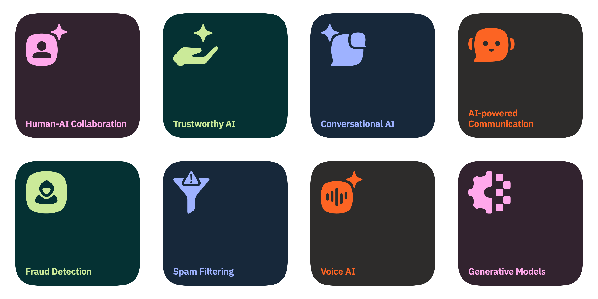

Working noteMost of what we try does not work. This site is where I write down which parts did, and why the difference was rarely the model.
01 Log all updates →
02 Team AI Research (AIR) about the team →
AIR is the R&D team inside Infobip — applied research on messaging, voice and customer engagement, running on a platform that carries a large share of the world's business communication.
The distance between a result that holds in a paper and one that holds on live traffic is the whole job. Closing it is what the team is for.
Read what AI Research is working on
03 Selected work all 33 papers →
| Title | Published in | Get | |
|---|---|---|---|
| 01 | Uptrendz: API-Centric Real-Time Recommendations in Multi-Domain Settings | ECIR 2023conference · Springer | pdfposter |
| 02 | What Drives Readership? User Interface Types and Popularity Bias Mitigation in News Recommendation | ECIR 2022conference · Springer | pdfposter |
| 03 | Using Autoencoders for Session-based Job Recommendations | UMUAI 2020journal · Springer | |
| 04 | Should we Embed? Online Performance of Embeddings for Real-Time Job Recommendations | RecSys 2019conference · ACM | pdfposter |
| 05 | Utilizing Online Social Network and Location-Based Data to Recommend Products in Online Marketplaces | MMSM 2015book chapter · Springer |
Five of 33, newest first. · 15 deployed systems live in the project portfolio →
04 Talks all talks →
05 Career in brief full cv →
Principal Engineer — founded and lead Team AI Research
University & Project Assistant — EU project Learning Layers
Junior Software Developer — Ruby, data-centre management tooling
Java Developer — EU FP7 project Mirror
Software Engineer — mobile cloud services (SMS, HLR, USSD)
Java Developer — primary healthcare information system
Grouped by organisation; roles nested where a tenure covers more than one.
06 Education cv →
Graz University of Technology · Graz
University of Zagreb, FER · final year at Karlsruhe Institute of Technology
University of Zagreb, FER · Zagreb
07 Funding & fellowships all →
2026— · Multi-country EU research project · Infobip research lead
2023— · European Digital Innovation Hub · partner
2015 · IKT der Zukunft · secured for Know-Center as technology contributor
2018 · Individual research grant · UCLA, Los Angeles
Amounts shown where public. Awards and honours live on the CV.
08 Collaborate
Joint agendas, pilots, student theses, or a paper that needs an industrial testbed — those are the conversations worth having.
Get in touch